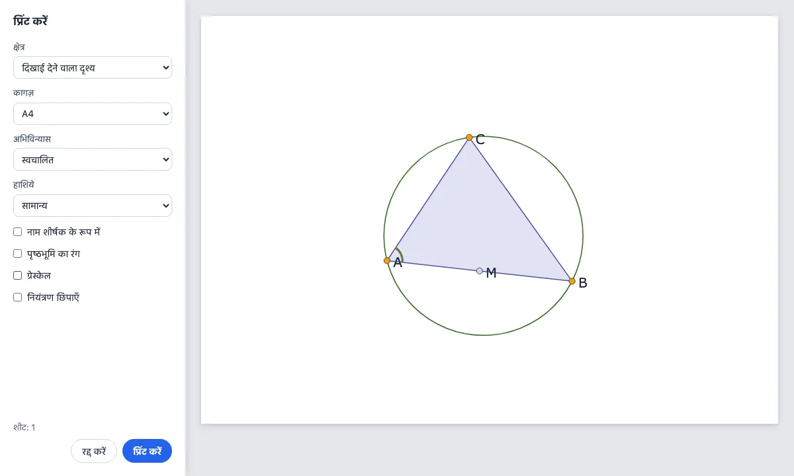
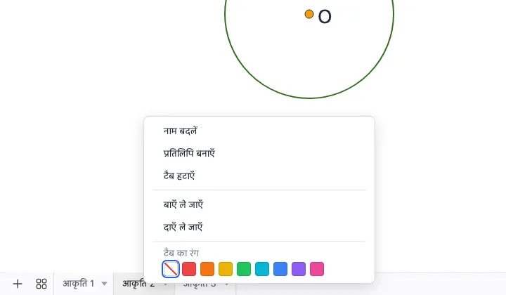

खोलना और सहेजना
खोलना
खोलें एक फ़ाइल लोड करता है:
| एक्सटेंशन | स्रोत |
|---|---|
.dgo |
DocGeo, मूल फ़ॉर्मेट |
.dgp |
DGPad, आयातित |
.ggb |
GeoGebra, आयातित |
फ़ाइल के आइकन को पेज पर खींचकर भी छोड़ा जा सकता है, संपादक में भी और प्लेयर में भी।
खोली गई आकृति वर्तमान आकृति की जगह ले लेती है और पूर्ववत करने का इतिहास खाली कर देती है।
ऑनलाइन आकृति लिंक से भी खुलती है (देखें लिंक से आकृति साझा करना)।
फ़ाइल मेनू में खोलें… (Ctrl O) और नई आकृति भी है, जो खाली आकृति से शुरू करता है।
हाल के दस्तावेज़
फ़ाइल › हाल का दस्तावेज़ खोलें पिछली दस खोली या सहेजी गई आकृतियाँ दिखाता है, सबसे नई सबसे ऊपर: Chrome और Edge में कंप्यूटर की फ़ाइलें; सभी ब्राउज़रों में लिंक से खोली गई आकृतियाँ। ब्राउज़र फ़ाइल पढ़ने की अनुमति फिर से माँग सकता है। जो फ़ाइल तब से हटाई, स्थानांतरित की गई या जिसका नाम बदला गया, उसकी सूचना दी जाती है और उसे सूची से निकाल दिया जाता है। सूची साफ़ करें उसे खाली करता है।
अधूरा आयात
DGPad या GeoGebra का कोई असमर्थित तत्व अपने आश्रितों सहित अनदेखा कर दिया जाता है; संकेत उनकी सूची देता है («आयात नहीं हुआ: …»)। विवरण DGPad और GeoGebra से आयात में है।
सहेजना
, फ़ाइल › सहेजें या
Ctrl S आकृति को .dgo में
सहेजता है। दृश्य (ज़ूम, 3D दिशा, निर्देशांक प्रणाली) भी सहेजा
जाता है।
Chrome और Edge में DocGeo किसी एप्लिकेशन की तरह सहेजता है: पहली
बार सहेजते समय पूछा जाता है कि फ़ाइल कहाँ रखनी है, उसके बाद बिना
पूछे वही फ़ाइल बदल दी जाती है। से खोली गई
या पेज पर छोड़ी गई .dgo आकृति अपनी ही फ़ाइल में
सहेजी जाती है; ब्राउज़र उसे बदलने की अनुमति एक बार माँगता है।
DGPad या GeoGebra आकृति कभी अधिलेखित नहीं होती: उसे पहली बार
सहेजने पर एक .dgo फ़ाइल बनती है।
इस रूप में सहेजें… (Ctrl
Shift S) दूसरी फ़ाइल चुनता है।
फ़ाइल का नाम मेनू बार के छोर पर दिखता है; लाल बिंदु बिना सहेजे बदलावों को दर्शाता है। सहेजने पर, या सहेजी गई स्थिति तक पूर्ववत करने पर, वह गायब हो जाता है। दृश्य को खिसकाना या ज़ूम करना बदलाव नहीं गिना जाता।
अन्य ब्राउज़रों (Firefox, Safari) में, या जब DocGeo किसी दूसरे
पेज में एम्बेड हो, सहेजना आकृति को खुली आकृति के नाम से डाउनलोड
करता है (नई आकृति के लिए figure.dgo)।
.dgo ही एकमात्र सहेजने का फ़ॉर्मेट है: DGPad या
GeoGebra की आकृति खोलकर सहेजने से वह बदल जाती है।
बिना सहेजी आकृति पुनर्प्राप्त करना
जब तक किसी आकृति में बिना सहेजे बदलाव हैं, DocGeo ब्राउज़र में उसकी एक प्रति रखता है। यदि सहेजे जाने से पहले संपादक बंद हो जाए (गलती से बंद की गई विंडो, क्रैश), तो वह आकृति तारीख के साथ फ़ाइल › हाल का दस्तावेज़ खोलें में सबसे ऊपर बिना सहेजी गई आकृतियाँ के नीचे दिखती है: चुनने पर वह लौट आती है, अब भी बिना सहेजी के रूप में चिह्नित। ये प्रतियाँ चौदह दिन तक रखी जाती हैं, अधिकतम दस; सूची साफ़ करें इन्हें भी मिटा देता है।
यह प्रति इसी कंप्यूटर के ब्राउज़र में रहती है: यह सहेजने का विकल्प नहीं है। जब DocGeo किसी दूसरे पेज में एम्बेड हो, तब कुछ भी नहीं रखा जाता।
प्रिंट करना
फ़ाइल › प्रिंट करें… (Ctrl P) शीटों का पूर्वावलोकन उनकी सेटिंग्स के बगल में दिखाता है। फिर प्रिंट करें ब्राउज़र का प्रिंट संवाद खोलता है, जो PDF के रूप में सहेज भी सकता है।

आकृति शीट को हाशियों तक भरती है: रेखाएँ और वक्र किनारे तक जाते हैं। शुरू में वह कभी बड़ी नहीं की जाती: रेखाएँ और लेबल स्क्रीन वाला अपना आकार रखते हैं।
- किसी शीट पर खींचने से आकृति खिसकती है; माउस का पहिया उसे ज़ूम करता है। संपादक का दृश्य नहीं बदलता।
- क्षेत्र: दिखाई देने वाला दृश्य शीट को उस पर केंद्रित करता है जो स्क्रीन दिखाती है, टूल पैलेट या गुणों से छिपे भाग के बिना; केवल आकृति उसे बनी हुई वस्तुओं पर केंद्रित करता है।
- कागज़, अभिविन्यास (स्वचालित: क्षेत्र के अनुसार) और हाशिये। इन सेटिंग्स, क्षेत्र या शीर्षक को बदलने से शीटें फिर से फ़्रेम होती हैं।
- नाम शीर्षक के रूप में आकृति, या पृष्ठ, का नाम शीट के ऊपर लिखता है; पृष्ठभूमि का रंग आकृति की पृष्ठभूमि प्रिंट करता है; ग्रेस्केल रंग हटाता है; नियंत्रण छिपाएँ स्लाइडर, चेकबॉक्स, इनपुट फ़ील्ड, सूचियाँ और बटन हटाता है।
- वर्कबुक में, सभी टैब हर टैब के लिए एक शीट प्रिंट करता है।
Esc या रद्द करें पूर्वावलोकन बंद करता है। सेटिंग्स संपादक बंद होने तक वैसी ही रहती हैं।
वर्कबुक: कई टैब
वर्कबुक कई आकृतियों को, हर एक को उसके अपने टैब में, एक ही
.dgo फ़ाइल में रखती है। आकृति के नीचे के टैब एक बार
में एक आकृति दिखाते हैं।

- फ़ाइल › नया टैब बाकी टैबों के बाद एक खाली टैब जोड़ता है, जिसका नाम “आकृति 2”, “आकृति 3”… होता है: वर्तमान आकृति “आकृति 1” बन जाती है। इसके बाद टैबों की शुरुआत में + बटन यही करता है, और उसके पास वाला बटन सभी टैबों की सूची दिखाता है।
- फ़ाइल › नया स्प्रेडशीट टैब ऐसा टैब जोड़ता है जिसमें केवल एक वर्कशीट होती है, जिसका नाम «स्प्रेडशीट 1», «स्प्रेडशीट 2»… होता है (स्प्रेडशीट)।
- फ़ाइल › नए टैब में खोलें… सहेजी गई आकृतियाँ जोड़ता है, हर एक को उसके नाम वाले टैब में (वर्कबुक अपने सभी टैब साथ लाती है)। फ़ाइल › टैब को इस रूप में सहेजें… दिखाए गए टैब की आकृति को अकेले सहेजता है।
- किसी टैब पर, या उसके ▾ तीर पर, राइट-क्लिक उसका मेनू खोलता है: नाम बदलें, प्रतिलिपि बनाएँ, टैब हटाएँ, बाएँ ले जाएँ या दाएँ ले जाएँ, और टैब का रंग।
- किसी टैब पर डबल-क्लिक उसका नाम बदलता है (Enter पुष्टि करता है, Esc रद्द करता है); दो टैबों का एक ही नाम नहीं हो सकता। खींचा गया टैब अपनी जगह बदलता है।
- टैब स्वतंत्र हैं: हर टैब के अपने ऑब्जेक्ट, अक्ष, मैक्रो और पूर्ववत इतिहास होते हैं, जो उस पर लौटने पर फिर मिलते हैं। फिर भी कोई सूत्र किसी दूसरे टैब का मान पढ़ सकता है (दूसरा टैब पढ़ना)। हालाँकि, प्रोग्रामों के वैश्विक पूरी वर्कबुक में साझा होते हैं (ब्लॉक और कछुआ)।
- सहेजना पूरी वर्कबुक लिखता है, हर टैब जैसा छोड़ा गया था वैसा; दिखाया गया टैब ही खुलेगा। एक ही टैब वाली वर्कबुक फिर से साधारण आकृति बन जाती है।
प्लेयर भी टैब दिखाता है। किसी वेब पेज में एम्बेड की गई आकृति केवल वही टैब दिखाती है जो सहेजते समय दिखाया गया था।
लिंक से आकृति साझा करना
ऑनलाइन रखी गई आकृति लिंक से खुलती है: संपादक का पता, उसके बाद
?url= और फ़ाइल का लिंक, जैसा है वैसा चिपकाया हुआ।
https://doctools.org/apps/docgeo/editor.html?url=https://www.dropbox.com/scl/fi/…/thales.dgo?rlkey=…&dl=0फ़ाइल का लिंक यहाँ से आ सकता है:
| सेवा | कॉपी करने वाला लिंक |
|---|---|
| Google Drive | साझा करने का लिंक, पहुँच “लिंक वाला कोई भी व्यक्ति” |
| Dropbox | साझा करने का लिंक |
| OneDrive |
निजी खाते का साझा करने का लिंक
(https://1drv.ms/u/c/…)
|
| Nextcloud | सार्वजनिक साझा लिंक, बिना पासवर्ड |
| वेबसाइट |
फ़ाइल का पता (.dgo,
.dgp या .ggb)
|
फ़ॉर्मेट फ़ाइल की सामग्री से पहचाना जाता है, और उसका नाम मेनू
बार के छोर पर दिखता है। ऑनलाइन फ़ाइल कभी नहीं बदलती: सहेजने से
कंप्यूटर पर एक .dgo फ़ाइल बनती है।
पते में ?url= सबसे अंत में आता है: उसके बाद का सब
कुछ लिंक का हिस्सा है
(editor.html?lang=en&url=…)।
वेब पेज में आकृति एम्बेड करना
ऑनलाइन प्रकाशित आकृति किसी वेब पेज में भी, चलाने योग्य रूप में, दिखाई जा सकती है: देखें वेब पेज में एम्बेड करना।
भाषा
DocGeo ब्राउज़र की भाषा लेता है; ?lang= भाषा तय
करता है (ar, de, el,
en, es, fr,
hi, it, nl,
pt, zh, zh-TW)। भाषा
कमांडों के नाम भी तय करती है (मध्यबिन्दु,
Milieu…); अंग्रेज़ी नाम सभी भाषाओं में
समझे जाते हैं।